Prompt Life v0.27.18 Final Response With Screenshots
Summary
- Removed learner-facing renderer/debug metadata chips from visual-aid review UI.
- Renamed and rebuilt the Attention visual as Relevance Between Tokens.
- Raised diagram readability rules and removed compressed review-route visual text.
- Kept MLP, Layers, and Hidden States structurally, with readability repairs.
- Updated Logits, Softmax, and Sampling around the same candidate tokens: floor, mat, kitchen, banana.
- Created the renderer strategy inventory, readability audit, report PDF, and screenshot set.
Attention Visual
Title: Relevance Between Tokens
Caption: Attention assigns temporary relevance weights between token positions. It is not awareness.
Callouts: Target token: “it” is the token being updated. Source clue: “cat” fits the local sentence relationship. Weighted relevance: attention changes how strongly one token position uses information from another. Limit: attention is calculation over positions, not awareness.
Key takeaway: Attention is weighted relevance between token positions, not consciousness.
Rendering Strategy
Preferred: shared visual-aid frame with HTML callouts plus coded SVG/HTML for exact mechanisms. Generated PNGs stay useful for atmospheric visuals only, with instructional text in HTML.
Deprecated: renderer metadata chip wrapper in learner-facing UI.
Screenshots
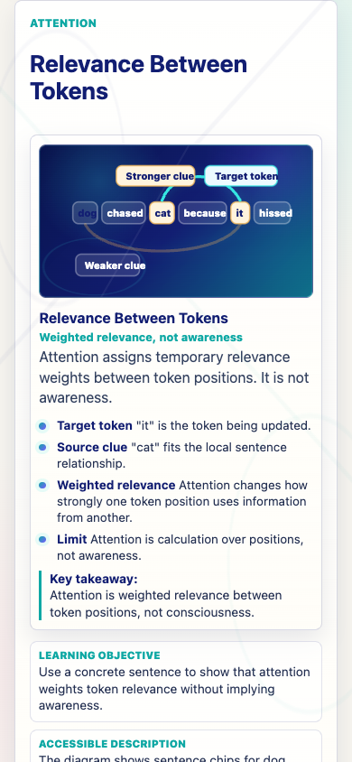
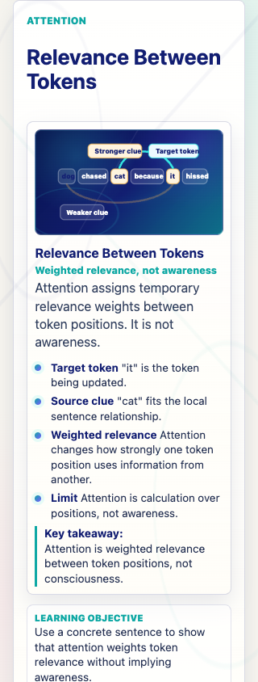
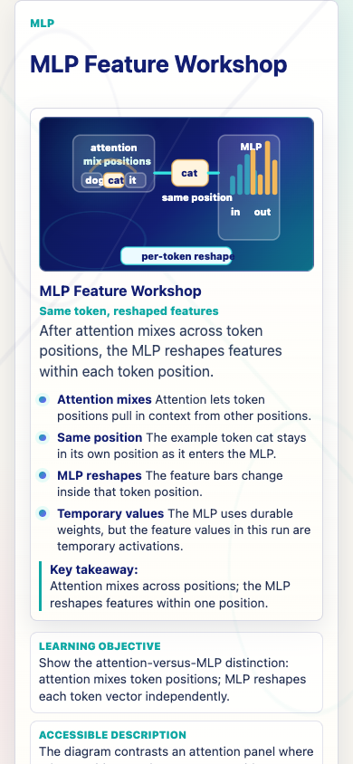
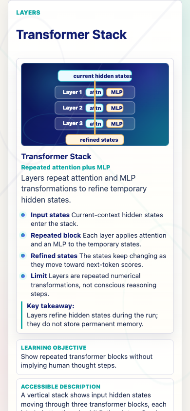
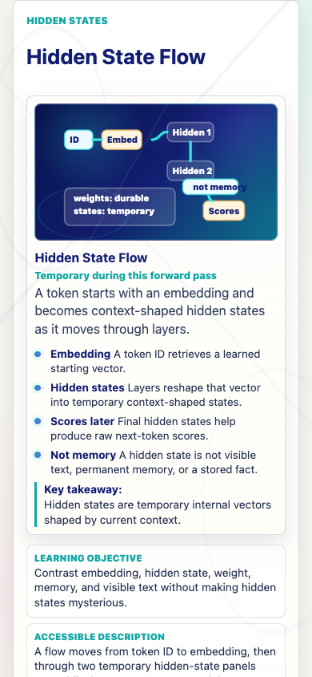
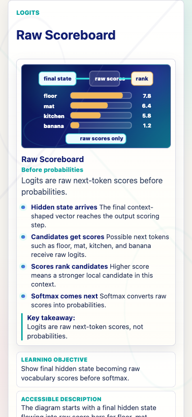
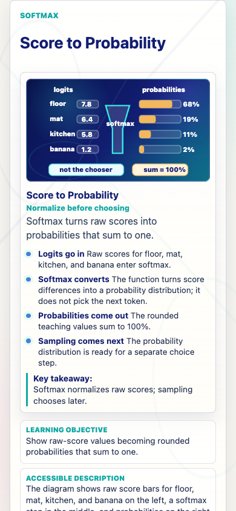
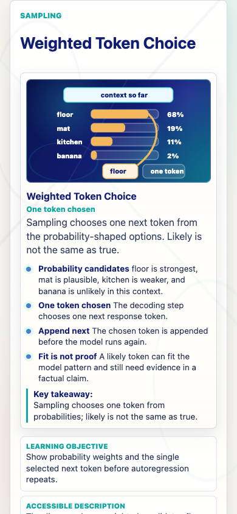
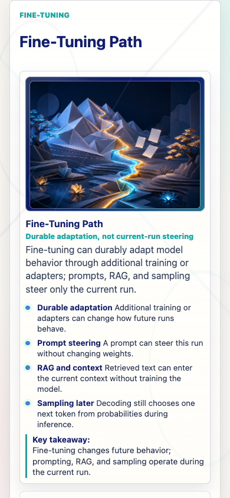
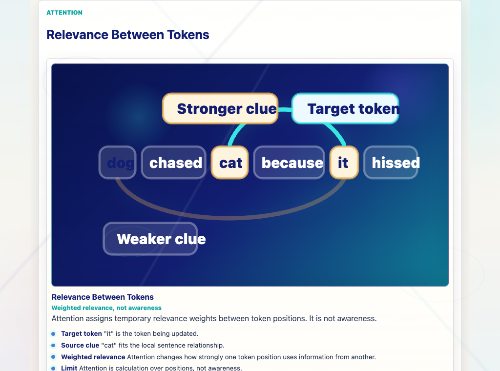
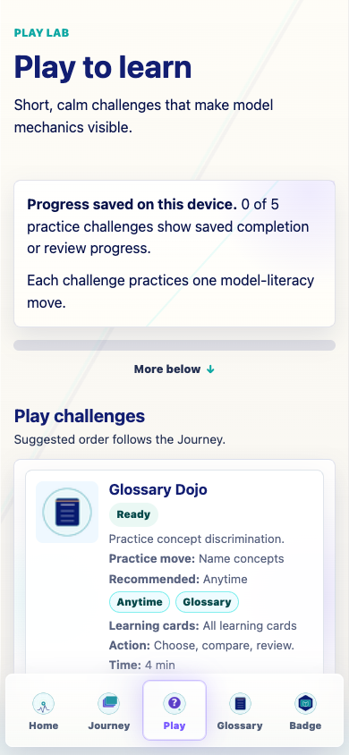
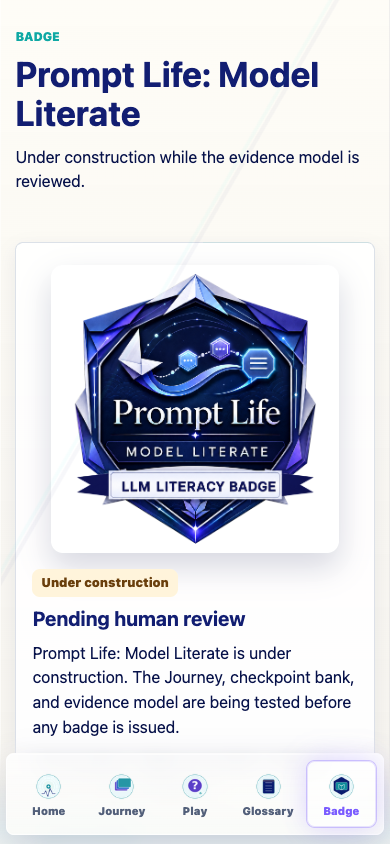
Verification
npm run typecheck: passed.npm run build: passed sequentially.npm run build:pages: passed sequentially.npm run audit:answers: passed.npm run audit:checkpoints: passed.npm run audit:question-clues: completed; informational warnings remain for human review.npm run audit:learner-copy: passed.npm run audit:visual-aids: passed with 39 aids, 0 mismatches, 0 readability issues.- Browser QA: 320px/390px mobile and desktop visual review passed; all eight Journey stage links still route/focus correctly.